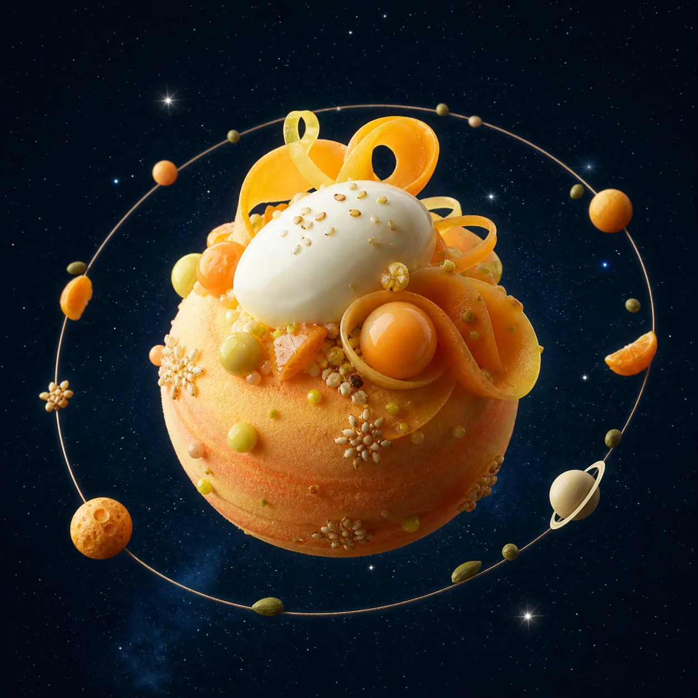

Ember
Charred peach / saffron / solar salt
4.8 AUSeason 04 / Solar menu
A tasting menu plotted across five edible planets. No rockets required.
Launch menu ↘
Mission philosophy
We use technique from Earth and imagination from everywhere else.
Seats available / 20:30